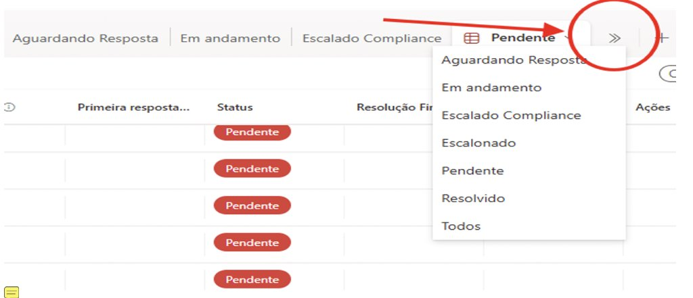

O problema
Solicitações enviadas por e-mail à equipe de Risk ficavam espalhadas, sem prioridade clara, sem dono definido e sem histórico das ações realizadas pelos analistas.
Microsoft Lists · SharePoint · Power Automate
Fila operacional que transforma solicitações recebidas por e-mail em tickets rastreáveis, com atribuição, status automáticos e histórico de cada ação dos analistas.
| Ticket | Origem | Tipo | Responsável | Status | Ação |
|---|
Clique em “Atribuir” e veja o status mudar sozinho, como na automação real.
Solicitações enviadas por e-mail à equipe de Risk ficavam espalhadas, sem prioridade clara, sem dono definido e sem histórico das ações realizadas pelos analistas.
A solicitação chega e entra na fila como Pendente.
O analista seleciona a linha e usa Integrate › Atribuição. O responsável e a data são preenchidos.
O status muda sozinho para Em andamento, padrão repetido em todas as automações.
Aguardando Resposta, Escalado Compliance ou Escalonado, conforme o caso.
Ao resolver, a data de finalização é registrada e o ticket sai da fila ativa.
Casos escalados seguem o mesmo fluxo do analista, mas com automações próprias do SM: a atribuição registra o nome do responsável e a finalização registra data e hora da resolução.
Centralização das solicitações, documentação das ações dos analistas, padronização do ciclo de vida do ticket e redução de falhas de acompanhamento.
Prints da fila no Microsoft Lists. Campos de identificação foram ocultados.
